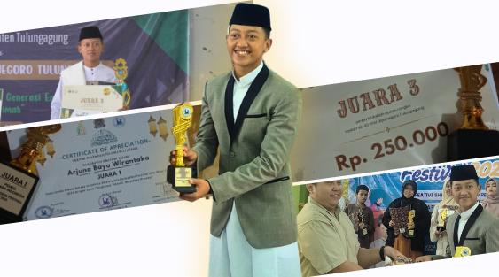
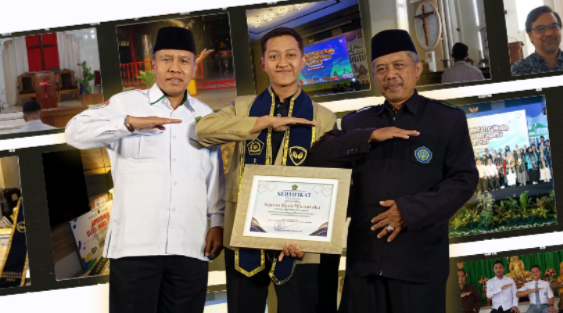
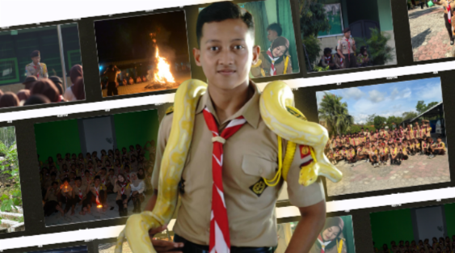
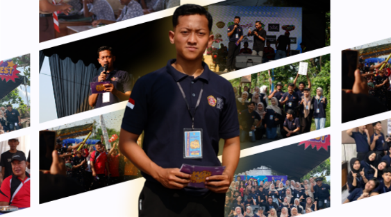
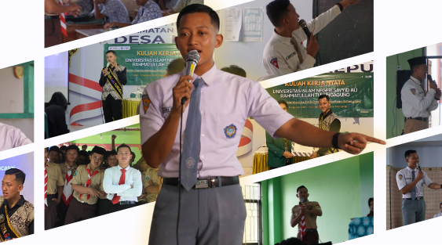

Portfolio
PRESTASI

Juara Lomba Pidato, Orasi dan Dakwah
Meraih penghargaan sebagai juara pada beberapa lomba pidato, orasi dan juga dakwah.

Top 5 Duta Generasi Berencana Kab. Tulungagung
Meraih penghargaan sebagai TOP 5 Duta GenRe Kab. Tulungagung Thn. 2024.

40 Besar Inisiator Muda Moderasi Beragama Kemenag RI
Terpilih sebagai 40 Besar IMMB Thn. 2024, TOT & penghargaan di Jakarta.

Juara 1 Duta Paskibra Santri
Juara 1 Duta Paskibra Santri pada LKBB Santri 2024.

Juara Pencak Silat Seni Tunggal
Juara kejuaraan pencak silat dari tingkat Kabupaten hingga Nasional.
PENGALAMAN

Pradana Pramuka MAN 3 Tulungagung
Menginisiasi kegiatan baru di Ambalan Sultan Hasanuddin - RA Kartini.

Anggota Karang Taruna Bina Remaja
Aktif merencanakan & melaksanakan kegiatan di desa Ariyojeding.

Pelatih dan Pembina Pramuka
Melatih dan membina siswa dalam kegiatan kepramukaan.

MC dan Moderator
Membawakan berbagai acara formal dan non formal.

Leader Outbound
Memimpin kegiatan outbound yang menyenangkan dan edukatif.

Pemateri / Narasumber
Menyampaikan materi kepemimpinan & komunikasi.